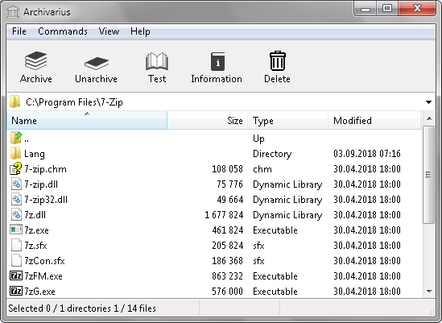

Main window consist of five elements
Main menu consist of three popup menus
| Item | Shortcut | Description |
| Open archive | Ctrl + O | Open archive over file dialog |
| Close archive | Ctrl + W | Close current opened archive. |
| Open log | Ctrl + L | Open log file. |
| Options | F11 | Program options. |
| Exit | F12 | Close main window of program. |
| Item | Shortcut | Description |
| Archive | F5 | Append files to archive. |
| Unarchive | F6 | Extract files from archive. |
| Test | F7 | Test files in archive. |
| Information | F8 | Information about archive, files or folders. |
| Delete | Delete | Delete files, folders from archive or file system. |
| Rename | F2 | Rename files, folders in archive or file system. |
| Update | F3 | Update file list. |
| Select address | F4 | Activate address panel. |
| Select all | Ctrl + A | Select all items in file list. |
| Copy files | Ctrl + C | Copy files to clipboard. Inside archive before copy will be unpack. |
| Paste files | Ctrl + V | Paste files from clipboard or archiving. |
| Create folder | Ctrl + F7 | Create new folder. |
| Item | Shortcut | Description |
| Manual | F1 | Program manual. |
| About | Short information about program. |
For detailed description see popup menu Commands from main Menu.
This panel show current address in archive or file system. Can edit, copy and paste in panel path to directory or to archive file.
File list show files, folders from current address. This items can open, rename, delete or move to parent folder by backspace.
Statusbar show count selected and total files, directories. Inside archive also showing information about compression algorithm, ratio and encryption state.